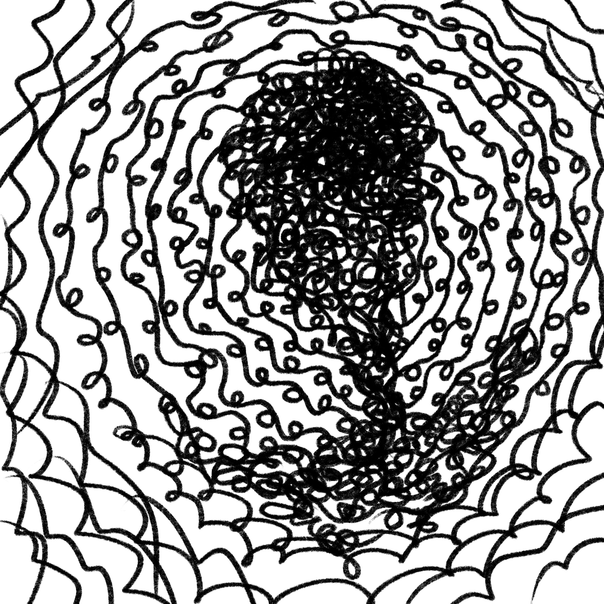

ортём
SCP - 2

Уровень допуска: первый.
Класс: безопасный.
Возраст: примерно 18 столетий.
условия содержания
Не требуется особых условий содержания, так как объект не представляет опасности.
Предоставлять объекту доступ в интернет, в частности к SCP-5.
описание
Объект SCP-2 представляет собой гуманоидную форму жизни мужского пола. Возраст объекта определить точно не удалось, но приблизительно равен 18-ти столетиям (погрешность составляет +- 12 лет).
Объект был найден в 1957 году на раскопках в бельгийском городе Брюгге. В настоящий момент нет данных о том, как объект оказался там. Найденный в бессознательном состоянии, объект, войдя в контакт с группой исследователей, пришёл в себя и попросил
предоставить ему доступ в интернет. Инцидент быстро был ликвидирован работниками фонда, все свидетели были подвержены действию амнезиака класса "A". Фонд забрал объект под свой контроль.
Сотрудники фонда спросили у SCP-2 о его происхождении. Объект не дал явных объяснений. Было сказано лишь: "Я знаю всё. Я был здесь. Мне не страшно. Вы увидите и поймёте. Но не ты, Генри, ты не успел." (подробнее читать в пояснительной записке ниже)
Известно, что в настоящее время объект обладает выделенным сервером, расположенным на SCP-5. Сервер имеет название "Храм Безликих" на кириллице. На сервере находится ещё некоторое количество обхектов SCP-5-N. (подробнее читать в SCP-5)
SCP-2 следит за порядком на сервере и является единственным администратором сервера. Предположительно, сервер служит местом сбора остальных объектов в целях увеселения. В настоящий момент ни одному сотруднику Фонда не удалось проникнуть на сервер пользуясь личным аккаунтом.
дополнение
пояснительная записка
Документ составлен сотрудником: Д-р Генри ████████.
Дата составления: 1963.██.██
"...Кажется я понял, что это значило. Тогда. Тогда он уже знал. Он сказал мне, что все увидят. Что все поймут, чёрт побери... А теперь выясняется, что у меня рак поджелудочной. Видите ли "генетика".
Доктора прогнозируют не больше 2-х лет из-за того, что я на последней стадии. Я даже не знаю, судьба это или его злая шутка... Сраный второй..."
(конец документа)
Примечание: Д-р Генри скончался от заболевания 1964.██.██
SECURE.CONTAIN.PROTECT XPAM CEO INC.